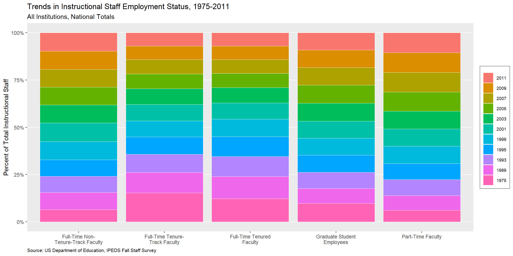
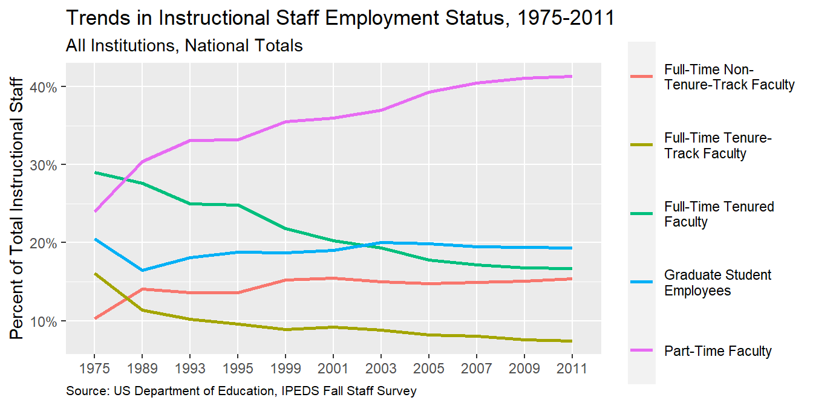
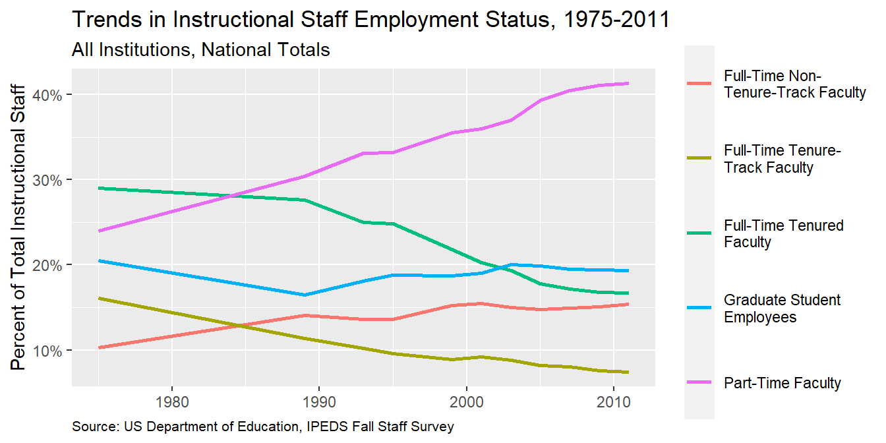
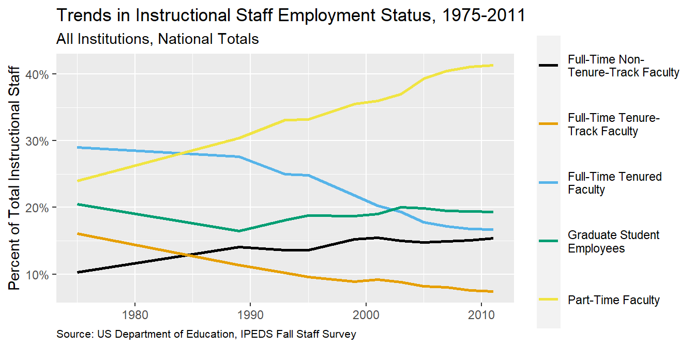

Trends instructional staff employees in universities
Application exercise
Answers
The American Association of University Professors (AAUP) is a nonprofit membership association of faculty and other academic professionals. This report by the AAUP shows trends in instructional staff employees between 1975 and 2011, and contains the following image. What trends are apparent in this visualization?
Warning: package 'ggthemes' was built under R version 4.2.2
Data
Each row in this dataset represents a faculty type, and the columns are the years for which we have data. The values are percentage of hires of that type of faculty for each year.
Your turn (10 minutes): Recreate the visualization above. Try to match as many of the elements as possible. Hint: You might need to reshape your data first.
staff_long|>ggplot(aes(x =str_wrap(faculty_type, 20), y =percentage, fill =year))+geom_col(position ="dodge")+scale_y_continuous(breaks =seq(5, 45, 5), limits =c(0, 45))+labs( x =NULL, y ="Percent of Total Instructional Staff", fill =NULL, title ="Trends in Instructional Staff Employment Status, 1975-2011", subtitle ="All Institutions, National Totals", caption ="Source: US Department of Education, IPEDS Fall Staff Survey")+theme( legend.position =c(0.4, 0.93), legend.direction ="horizontal", legend.key.size =unit(0.2, "cm"), legend.key.height =unit(0.1, "cm"), legend.text.align =0, legend.background =element_rect(color ="black", linewidth =0.2), legend.text =element_text(size =7), panel.grid.minor =element_blank(), panel.grid.major.x =element_blank(), plot.caption =element_text(size =8, hjust =0))+guides(fill =guide_legend(nrow =1))
Represent percentages as parts of a whole
Demo: Recreate the previous visualization where the percentages are represented as parts of a whole.
staff_long|>ggplot(aes(x =str_wrap(faculty_type, 20), y =percentage, fill =fct_rev(year)))+geom_col(position ="fill", color ="white", linewidth =0.2)+scale_y_continuous(labels =label_percent())+labs(x =NULL, y ="Percent of Total Instructional Staff", fill =NULL, title ="Trends in Instructional Staff Employment Status, 1975-2011", subtitle ="All Institutions, National Totals", caption ="Source: US Department of Education, IPEDS Fall Staff Survey")+theme( legend.text.align =0, legend.background =element_rect(color ="black", size =0.2), legend.text =element_text(size =7), panel.grid.minor =element_blank(), panel.grid.major.x =element_blank(), plot.caption =element_text(size =8, hjust =0))
Warning: The `size` argument of `element_rect()` is deprecated as of ggplot2 3.4.0.
ℹ Please use the `linewidth` argument instead.

Place time on x-axis
Demo: Convert the visualization to a line plot with time on the x-axis.
staff_long|>ggplot(aes(x =year, y =percentage, color =str_wrap(faculty_type, 20), group =str_wrap(faculty_type, 20)))+geom_line(linewidth =1)+labs(x =NULL, y ="Percent of Total Instructional Staff", color =NULL, title ="Trends in Instructional Staff Employment Status, 1975-2011", subtitle ="All Institutions, National Totals", caption ="Source: US Department of Education, IPEDS Fall Staff Survey")+scale_y_continuous(labels =label_percent(accuracy =1, scale =1))+theme( legend.key.height =unit(1.5, "cm"), plot.caption =element_text(size =8, hjust =0))

Pay attention to variable types
Question: What is wrong with the x-axis of the plot above? How can you fix it?
Time is represented as a character string (equally spaces between levels) instead of on a continuous scale (with spacing indicating numbers of years between ticks.
Your turn: Implement the fix for the x-axis of the plot.
staff_long<-staff_long|>mutate(year =as.numeric(year))ggplot(staff_long,aes(x =year, y =percentage, color =str_wrap(faculty_type, 20), group =str_wrap(faculty_type, 20)))+geom_line(linewidth =1)+labs(x =NULL, y ="Percent of Total Instructional Staff", color =NULL, title ="Trends in Instructional Staff Employment Status, 1975-2011", subtitle ="All Institutions, National Totals", caption ="Source: US Department of Education, IPEDS Fall Staff Survey")+scale_y_continuous(labels =label_percent(accuracy =1, scale =1))+theme( legend.key.height =unit(1.5, "cm"), plot.caption =element_text(size =8, hjust =0))

Use an accessible color scale
Question: What do we mean by an accessible color scale? What types of color vision deficiencies are there?
Demo: What does the plot look like to people with various color vision deficiencies?
Demo: Remake the plot with an accessible color scale.
ggplot(staff_long,aes(x =year, y =percentage, color =str_wrap(faculty_type, 20), group =str_wrap(faculty_type, 20)))+geom_line(linewidth =1)+labs(x =NULL, y ="Percent of Total Instructional Staff", color =NULL, title ="Trends in Instructional Staff Employment Status, 1975-2011", subtitle ="All Institutions, National Totals", caption ="Source: US Department of Education, IPEDS Fall Staff Survey")+scale_y_continuous(labels =label_percent(accuracy =1, scale =1))+theme( legend.key.height =unit(1.5, "cm"), plot.caption =element_text(size =8, hjust =0))+scale_color_colorblind()# from ggthemes package

Use direct labeling
Demo: Remove the legend and add labels for each line at the end of the line (where x is the max(x) recorded).
staff_long|>ggplot(aes(x =year, y =percentage, color =faculty_type, group =faculty_type))+geom_line(linewidth =1, show.legend =FALSE)+geom_text( data =staff_long|>filter(year==max(year)),aes(x =year+1, y =percentage, label =faculty_type), hjust ="left", show.legend =FALSE, size =4)+labs(x =NULL, y ="Percent of Total Instructional Staff", color =NULL, title ="Trends in Instructional Staff Employment Status, 1975-2011", subtitle ="All Institutions, National Totals", caption ="Source: US Department of Education, IPEDS Fall Staff Survey")+scale_y_continuous(labels =label_percent(accuracy =1, scale =1))+theme( plot.caption =element_text(size =8, hjust =0), plot.margin =margin(0.1, 2.5, 0.1, 0.1, unit ="in"))+coord_cartesian(clip ="off")+scale_color_colorblind()
Summary
Represent percentages as parts of a whole
Place variables representing time on the x-axis when possible
Pay attention to data types, e.g., represent time as time on a continuous scale, not years as levels of a categorical variable
Prefer direct labeling over legends
Use accessible colors
Use color to draw attention
Pick a purpose and label, color, annotate for that purpose
Communicate your main message directly in the plot labels
Simplify before you call it done (a.k.a. “Before you leave the house, look in the mirror and take one thing off”)